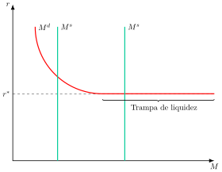
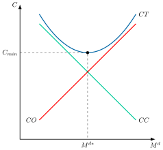
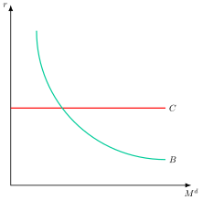
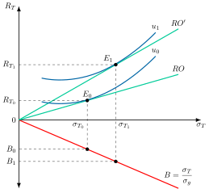

Apuntes para la oposición al Cuerpo de Diplomados Comerciales del Estado
5 Teorías de la demanda de dinero. Implicaciones de política económica.
5.1 Introducción  1'
1'
En una economía cada vez más digitalizada y con múltiples activos financieros rentables, surge una pregunta clave: ¿por qué los agentes económicos seguimos demandando dinero, un bien sin valor intrínseco? La respuesta a este dilema macroeconómico reside en algo más que sus funciones como medio de cambio y depósito de valor. Se fundamenta en la necesidad de liquidez y en la confianza que se tiene en el sistema.
Desde el punto de vista de la política monetaria, la demanda de dinero es un pilar esencial. Su estabilidad y su sensibilidad a los tipos de interés son vitales para que un banco central, como el BCE, pueda calibrar sus medidas. En un entorno de innovación en medios de pago y debate sobre la emisión de monedas digitales, entender la demanda de dinero ya no es solo una cuestión teórica, sino un factor crucial para el diseño de las estrategias monetarias del siglo XXI.
Por consiguiente, el objetivo de este tema será el estudio de las teorías de la demanda de dinero1 , con importantes implicaciones de política económica, según el siguiente esquema:
Teoría cuantitativa del dinero.
La demanda de dinero de Keynes.
Desarrollos del paradigma keynesiano: la síntesis neoclásica.
El monetarismo y la nueva teoría cuantitativa.
Nuevos desarrollos.
Implicaciones de política económica.
5.2 Teoría cuantitativa del dinero 2'
Comenzando con la teoría cuantitativa del dinero, dicha teoría establece que existe una relación directa entre la cantidad de dinero y el nivel de precios de una economía de forma que los incrementos de la cantidad de dinero darán lugar a aumento en el nivel de precios, es decir, generarán inflación. Los antecedentes de la teoría cuantitativa se encuentran en el siglo XVI con la Escuela de Salamanca2 y los trabajos del pensador francés Jean Bodin (Bodin 1568), así como en el siglo XVIII con los desarrollos de Hume (1752).
Posteriormente se plantean dos formulaciones, el enfoque de Fisher y el de Cambridge, que permiten interpretar la ecuación cuantitativa como una teoría de la demanda de dinero.
El enfoque de Fisher
El enfoque de Fisher (1911) no es una teorización de la demanda de dinero propiamente, sino que corresponde a una reinterpretación causal de la identidad contable de gasto, que ya había adelantado Hume (1752) al reflexionar sobre las necesidades de dinero de una nación.
Dicha identidad contable establece que la cantidad de dinero, \(M\), por la velocidad de circulación del dinero, \(V\), es decir, el número de veces que el dinero cambia de manos en un periodo, debe ser igual al valor de las transacciones, definido como el producto de los precios, \(P\), por el número de transacciones, \(T\): \[M\cdot V=P\cdot T \tag{5.1}\]
A partir de 5.1, Fisher formula 3 hipótesis que dotan de contenido económico a la identidad:
La cantidad de dinero, \(M\), se determina de forma exógena por la oferta de dinero.
El número de transacciones, \(T\), está dado por la renta de pleno empleo.
La velocidad de circulación, \(V\), cambia lentamente y es independiente del resto de variables, por lo que se asume que es constante.
De esta manera, de 5.1 se deriva la siguiente expresión: \[M=P\cdot\dfrac{\bar{T}}{\bar{V}} \tag{5.2}\] por lo que Fisher supone una teoría de determinación de precios en la que los incrementos de la cantidad de dinero dan lugar a incrementos en el nivel de precios e inflación.
Aunque no se trata de una teoría explicativa de la demanda de dinero, se puede formular en términos de demanda de dinero, \(M^{D}\), si se asume que el mercado de dinero está en equilibrio y la cantidad de dinero es igual a la demanda: \(M^{D}=M\). De esta manera, la demanda de dinero viene dada por \[M^{D}=\dfrac{1}{\bar{V}}\cdot P\cdot\bar{T} \tag{5.3}\]
con lo que sería constante a corto plazo. A largo plazo la demanda de dinero dependería de las transacciones –único motivo para mantener dinero– y de la tecnología de pagos, representada por la velocidad de circulación.
Además, se cumple la Ley de Say, según la cual la oferta crea su propia demanda, de modo que no puede haber insuficiencia de demanda agregada. Para los clásicos no es racional atesorar el dinero y todo el ahorro irá dirigido a inversión, gracias a la flexibilidad del tipo de interés.
El enfoque de Cambridge
Por otro lado, el enfoque de Cambridge desarrollado inicialmente por Marshall (1871) y profundizado por Pigou (1917) difiere del enfoque de Fisher en tres dimensiones:
Depósito de valor: el dinero no se considera exclusivamente un medio de cambio, sino también un depósito de valor.
Enfoque microeconómico: el análisis se centra en la demanda de dinero de los individuos, siendo un enfoque más microeconómico que macro. Así, la velocidad de circulación del dinero, \(V\), ya no es una variable determinada solamente por variables institucionales que afectan a los medios de cambio de una economía, sino también por factores como la restricción presupuestaria, el coste de oportunidad y las preferencias de los individuos.
Otras variables: el análisis tiene en cuenta otras variables como el tipo de interés, la riqueza o las expectativas, hasta el punto de que se puede considerar un antecedente de la teoría keynesiana por depender del tipo de interés.
Pigou asume que en el corto plazo el nivel de riqueza es constante, por lo que la demanda de dinero sería una fracción constante, \(k\), de la renta nominal, \(P\cdot Y\), donde \(Y\) es la renta real. Este parámetro \(k\), que mide qué parte de su renta nominal desean los agentes mantener en dinero, se denomina “constante de Cambridge”: \[M^{d}=k\cdot\left(P\cdot Y\right) \tag{5.4}\]
Relación entre la ecuación de Cambridge y la teoría cuantitativa de Fisher
Además, la ecuación de Cambridge se puede poner en relación con la teoría cuantitativa de Fisher, donde se puede observar cómo la “constante de Cambridge”, \(k\), es lo mismo que la inversa de la velocidad de circulación respecto a la renta, \(V_{Y}\), por lo que ambas teorías están conectadas.3 \[M^{d}=k\cdot\left(P\cdot Y\right)=\dfrac{1}{V_{Y}}\cdot P\cdot Y\Rightarrow k=\dfrac{1}{V_{Y}} \tag{5.5}\]
Por consiguiente, se deriva de estas teorías que
Cambios en la oferta monetaria se trasladarán a los precios, lo que implica que:
La inflación es un fenómeno monetario: los cambios en los precios, \(P\), se deben a cambios en la masa monetaria, \(M\).
El dinero es neutral, es decir, los cambios en la masa monetaria, \(M\), no afectan a las variables reales, como la renta real, \(Y\). Esto es consecuencia de la denominada dicotomía clásica, por la que las variables reales se determinan con independencia de las nominales.
El determinante más importante de la demanda de dinero es la renta, aunque el enfoque de Cambridge abre la puerta a que otros factores tengan alguna relevancia.
Implicaciones de política económica
Así, se derivan las siguientes implicaciones de política económica:
La política monetaria es inefectiva, ya que cualquier aumento en la oferta monetaria se traducirá en un aumento proporcional de los precios.
La política fiscal también es inefectiva por el efecto crowding-out.
Críticas
Sin embargo, ambas teorías parten de los supuestos neoclásicos tales como el comportamiento racional y maximizador de los agentes –homo economicus–, la flexibilidad de precios y la existencia de competencia e información perfectas.
Como crítica, la evidencia empírica sugiere que la política monetaria sí tiene efectos en el corto plazo y que la velocidad de circulación del dinero no es constante4. Se trata de una teoría poco elaborada en lo que se refiere al análisis de la demanda de dinero.
La teoría keynesiana ofrecerá una teoría alternativa más sofisticada, rompiendo con estos supuestos y planteando un nuevo enfoque de la demanda de dinero.
5.3 La demanda de dinero de Keynes 2'30"
Para Keynes (1936), los individuos demandan dinero por 3 motivos:
Motivo transacción, ya que las sendas de ingresos y gastos de los individuos no están sincronizadas, por lo que dependerá positivamente de la renta.
Motivo precaución, ante posibles imprevistos, por lo que dependerá positivamente de la renta y negativamente (aunque en menor medida) del tipo de interés (coste de oportunidad).
Motivo especulación, que deriva de la función de depósito de valor que dependerá negativamente de los tipos de interés. Así, la demanda de dinero por motivo especulación se basa en que los individuos tienen preferencia por la liquidez y es el motivo más relevante para la transmisión de la política monetaria, porque hace depender la demanda de dinero del tipo de interés.5
En su análisis utilizará los siguientes supuestos:
Economía a corto plazo.
Economía cerrada.
Incertidumbre.
Existencia de ilusión monetaria (los individuos se guían por factores nominales y no reales).
Para Keynes solo existen 2 activos que pueden servir como depósito de valor: el dinero y los bonos.6 Para entender cómo los individuos eligen entre ambos:
Describe una relación inversa entre tipos de interés y precios de los bonos: si el tipo de interés, \(r\), sube, el precio del bono, \(P_{B}\), disminuye (pues los bonos existentes generan menores intereses que los nuevos), y se producen pérdidas de capital7. \[\downarrow P_{B}=\dfrac{1}{\uparrow r} \tag{5.6}\]
Asume que los individuos consideran que los tipos de interés tienden a gravitar alrededor de un valor crítico subjetivo (el tipo que cada agente considera normal, es decir, al que espera que revierta el tipo de mercado, y que depende de sus expectativas volátiles y exógenas), diferente para cada individuo8.
Teoría de la preferencia por la liquidez
En base a lo anterior, Keynes define la teoría de la preferencia por la liquidez según la cual
Si los individuos piensan que el precio de los bonos es elevado esperarán a que disminuya por lo que decidirán vender bonos, aumentando la demanda de dinero.
Si por otro lado creen que los tipos de interés se encuentran por encima de su valor crítico, esperarán que disminuyan en el futuro, por lo que aumentará el precio de los bonos y preferirán comprar bonos, disminuyendo la demanda de dinero.
La principal consecuencia es que las decisiones sobre la demanda de dinero dependerán negativamente del tipo de interés y dichas decisiones van a ser muy inestables, ya que van a estar dominadas por las expectativas sobre los tipos de interés, a las que Keynes denomina “animal spirits”9. Además, para Keynes el tipo de interés es un fenómeno monetario que depende de la demanda de dinero ya que la oferta de dinero es vertical al seguir considerándose exógena.
Por lo tanto, para Keynes el tipo de interés es un fenómeno monetario que viene determinado por la preferencia por la liquidez –de manera que el tipo de interés se determina por la demanda de dinero, pues la oferta es vertical–. En cambio, para los neoclásicos, el tipo de interés se determina en el sector real –pues, para ellos, los individuos tienen preferencia por el consumo–10.
La demanda de dinero keynesiana se puede representar como \[\left(\dfrac{M}{P}\right)^{D}=k\cdot Y-h\cdot r \tag{5.7}\] donde \(k\) y \(h\) son, respectivamente, la sensibilidad de la demanda de saldos reales a la renta, \(Y\), y al tipo de interés, \(r\). El primer término representa la demanda de dinero por los motivos transacción y precaución, y el segundo, por el motivo especulación11.
Trampa de la liquidez
En este contexto, Keynes plantea su teoría de la trampa de la liquidez. Keynes creía que, si bien la demanda de dinero es decreciente con el tipo de interés, eventualmente, al alcanzar un determinado tipo de interés bajo, la demanda de dinero se volvería perfectamente elástica. Esto se conoce como la trampa de liquidez, y supone que cualquier aumento de las cantidades de dinero en la economía llevada a cabo por las autoridades monetarias se mantiene en efectivo, no se invierte (tan bajo está el tipo de interés que los agentes consideran que va a aumentar en el futuro, por lo que no demandan bonos y mantienen líquida toda su riqueza).
Gráficamente, en un plano tipos de interés y oferta monetaria real como el de la Figura 5.1, se representa la oferta y la demanda de dinero, Keynes afirma que al alcanzar determinado tipo de interés bajo12, \(r^{*}\), la demanda de dinero será totalmente elástica, es decir, los aumentos de liquidez no tendrán efecto sobre el tipo de interés y, por lo tanto, la política monetaria no será efectiva sobre la economía real 13.

Conclusiones
En suma, lo más destacable de la teoría keynesiana es que:
Keynes concibe el dinero como un activo financiero que compite con los bonos en la cartera de los individuos, y no solo como medio de cambio.
Las ideas de Keynes dan lugar a una demanda de dinero bastante inestable, ya que, junto con la renta corriente, el otro gran determinante de la demanda son las expectativas sobre los tipos de interés (gracias al motivo especulación), y estas son especialmente volátiles.
Introduce los tipos de interés en el análisis, lo que es muy novedoso –ya que para los clásicos la demanda de dinero dependía de la renta nominal–.
Implicaciones de política económica
Respecto a la política económica, en un contexto keynesiano la política fiscal es muy eficaz para afectar a la renta y la política monetaria es poco eficaz. La demanda de dinero depende fundamentalmente de las expectativas sobre el tipo de interés, que son volátiles, de modo que la relación entre el dinero y la renta es inestable y la eficacia de la política monetaria resulta difícil de prever.14
Críticas
Por otro lado, las principales críticas son:
Se basa en el corto plazo y da demasiada importancia a los tipos de interés.
No contempla las carteras diversificadas, ya que mantienen toda su riqueza o bien en forma de bonos o bien en forma de dinero, pero no en ambos a la vez.
5.4 Desarrollos del paradigma keynesiano de la demanda de dinero: la síntesis neoclásica 4'30"
Tanto las aportaciones como las críticas del modelo de Keynes van a llevar a otros autores a profundizar en los 3 motivos de demanda de dinero identificados por Keynes. Estos desarrollos pertenecen a la síntesis neoclásica, que formaliza los motivos keynesianos con modelos de optimización individual.
Motivo transacción: modelo de inventarios
Comenzando por el modelo de inventarios de Baumol (1952), Allais (1947) y Tobin (1956), el individuo en un contexto de certeza recibe una renta de manera periódica y la gasta de manera uniforme a lo largo del periodo, debiendo decidir sobre cómo gestionar su demanda de dinero, es decir, mantener su renta en forma de dinero –lo que genera un coste de oportunidad, el tipo de interés, y una rentabilidad nula– o mantenerla en bonos –lo que genera costes de corretaje, es decir, coste de conversión de los bonos en dinero–.
Por lo tanto, el problema del consumidor consiste en la minimización del coste total de dicha gestión:
\[\min\quad CT=b\cdot\dfrac{Y}{M}+i\cdot\dfrac{M}{2} \tag{5.8}\] donde \(b\) representa el coste de corretaje, \(Y\) la renta del individuo, \(M\) los saldos reales obtenidos cada vez que se convierten bonos en dinero15, \(i\) el tipo de interés que representa el coste de oportunidad y \(M/2\) que es el saldo monetario real medio durante el periodo16.
Gráficamente, en un plano de costes, \(C\), y demanda de dinero, \(M^{d}\), como el de la Figura 5.2 se representan los costes de corretaje, \(CC\), decrecientes con la demanda de dinero, y los costes de oportunidad, \(CO\), crecientes con el mismo. Por lo tanto, los costes totales, \(CT\), tendrán forma de U siendo el mínimo de los costes totales, \(C_{min}\), el que determine la demanda de dinero óptima, \(M^{d*}\).

Analíticamente, las CPO establecerán que el saldo monetario medio óptimo del periodo será: \[\dfrac{\partial CT}{\partial M}=0\rightarrow\dfrac{M}{2}=\sqrt{\dfrac{b\cdot Y}{2\cdot i}} \tag{5.9}\] por lo que la demanda de dinero será una función que dependa positivamente de la renta y del coste de corretaje y negativamente del tipo de interés17 \[M^{D}=f(\underset{+}{Y},\underset{+}{b},\underset{-}{i}) \tag{5.10}\]
En concreto, la elasticidad de la demanda de dinero respecto a la renta y al coste de corretaje es \(\dfrac{1}{2}\), y respecto al tipo de interés, \(-\dfrac{1}{2}\). Que la elasticidad-renta sea menor que 1 implica economías de escala en la tenencia de dinero, de modo que la demanda crece menos que proporcionalmente con la renta, a diferencia de la teoría cuantitativa, que la supone proporcional.18
El modelo de Miller y Orr (1966) generaliza este planteamiento a una empresa cuyos flujos de caja son aleatorios, y obtiene una elasticidad de la demanda de dinero respecto al tipo de interés de \(-\dfrac{1}{3}\) en lugar de \(-\dfrac{1}{2}\).
Lo más destacable de esta teoría es que se establecería un supermultiplicador de política monetaria, ya que, a tipo de interés dado, al aumentar la oferta monetaria la renta debería aumentar en mayor proporción para absorber el efecto19.
Respecto a las críticas:
Se determina una demanda de dinero individual, es decir, no tiene en cuenta problemas agregados.
La evidencia empírica sobre estas elasticidades no es concluyente: la elasticidad-renta estimada suele ser mayor que 1/2 y la elasticidad-interés con tipos a corto plazo, menor, aunque estudios recientes de largo plazo encuentran valores próximos a 1/2 (Ball 2001; Benati et al. 2021).20
Motivo precaución: modelo de costes de ruptura
Por otro lado, en el modelo de costes de ruptura de Whalen (1966) y Goldman (1974), a diferencia del modelo anterior, el individuo decide cómo gestionar su demanda de dinero en un contexto de incertidumbre sobre cuándo se van a producir tanto las entradas como las salidas de dinero. El individuo se enfrentará al mismo trade-off entre mantener el dinero en efectivo o en bonos.
En este modelo, el individuo empieza cada periodo con una cantidad de dinero igual a \(M\) y solo deberá pagar costes de corretaje en los meses en los que sus gastos superen al dinero que mantiene en efectivo. El individuo conoce la distribución del gasto, pero el resultado de cada mes es incierto. El individuo aumentará sus saldos de precaución hasta que el beneficio marginal (es decir, ahorro en gastos de corretaje por mantener una unidad adicional de efectivo) sea igual al coste marginal (coste de oportunidad de mantener dicha unidad adicional de efectivo).
Gráficamente, en un plano tipos de interés y cantidad de dinero en efectivo como el de la Figura 5.3, se representa la curva de beneficio marginal, que está relacionado con el ahorro en costes de corretaje, y tendrá pendiente negativa ya que cuanto mayor sea la proporción de dinero mantenida en efectivo será más improbable que el individuo tenga que convertir bonos en dinero. Por otro lado, el coste marginal vendrá representado por el coste de oportunidad de mantener el dinero en efectivo, es decir, el tipo de interés que se va a asumir constante. En este contexto, el equilibrio se encuentra en la intersección entre ambas curvas.

Por lo tanto, la demanda de dinero se define como una función que depende positivamente de los costes de corretaje –la curva de beneficio marginal se mueve hacia la derecha si aumenta– y negativamente del tipo de interés –la curva de coste de oportunidad se mueve hacia arriba si aumenta– mientras que el efecto sobre la renta es incierto –un aumento de la renta aumenta la dispersión entre pagos e ingresos, de manera que la curva de beneficio marginal girará en torno a un punto de sí misma, siendo el resultado final sobre \(M^{d}\) incierto–: \[M^{D}=f(\underset{?}{Y},\underset{+}{b},\underset{-}{i}) \tag{5.11}\]
El signo de la renta depende del nivel del tipo de interés. Con tipos bajos o normales, que son los relevantes, el aumento de la dispersión eleva la demanda de saldos de precaución, y solo con tipos muy elevados la reduce, un resultado sin respaldo empírico que desaparece si la comisión tiene un componente proporcional al importe retirado (Laidler 1977, 87-88).21 Con independencia entre cobros y pagos, el resultado robusto del modelo es que los saldos de precaución crecen menos que proporcionalmente con el volumen de operaciones, de modo que existen economías de escala (Laidler 1977, 86-88).
En cuanto a las implicaciones de política económica, una reducción de las comisiones de conversión disminuye la demanda de dinero, como en los modelos de transacción, y una menor incertidumbre sobre los flujos de cobros y pagos reduce los saldos de precaución. Además, la política monetaria es efectiva al afectar al tipo de interés, aunque la demanda de dinero sea poco sensible a él.
Motivo especulación: modelo de cartera
Por otro lado, en el modelo de cartera de Tobin (1958) se introducen específicamente consideraciones de riesgo en la determinación de la demanda de dinero. Se va a considerar el dinero como depósito de valor y se va a modificar y ampliar la demanda de dinero keynesiana por motivo especulación al considerar carteras diversificadas.
Supuestos
Se basa en los siguientes supuestos:
Los agentes eligen entre dos activos: el dinero que es libre de riesgo y ofrece rendimiento nulo y los bonos con riesgo y rendimiento positivo.
Los agentes son racionales: tratan de maximizar su rendimiento con el mínimo riesgo posible. Así tendrá una función de utilidad que depende positivamente del rendimiento y negativamente del riesgo \[U\left(R_{T},\sigma_{T}\right) \tag{5.12}\] donde \(R_{T}\) representa el rendimiento total esperado de la cartera y \(\sigma_{T}\) el riesgo total de la cartera, dado por la desviación típica.
El rendimiento esperado de la cartera dependerá de la proporción que se mantenga de dinero y de bonos. El rendimiento del dinero es nulo y el rendimiento de los bonos, \(R_{B}\), se compone de dos elementos: el tipo de interés, \(r\), que ofrecen los bonos y la ganancia esperada de capital, \(g\), que se puede obtener por la variación del precio de los bonos \[R_{B}=g+r \tag{5.13}\] por lo que el rendimiento esperado en cartera, \(R_{T}\), será igual al rendimiento de los bonos por su peso, \(B\), en la cartera \[R_{T}=B\cdot R_{B}=B\cdot\left(g+r\right) \tag{5.14}\]
El riesgo de la cartera, \(\sigma_{T}\), viene dado por el riesgo de los bonos, que depende a su vez de las ganancias o pérdidas de capital, \(\sigma_{g}\). Así el riesgo de la cartera es el riesgo de los bonos por su peso en la cartera \[\sigma_{T}=B\cdot\sigma_{g} \tag{5.15}\] De este modo, el rendimiento en cartera se puede expresar como \[R_{T}=\dfrac{\sigma_{T}}{\sigma_{g}}\cdot R_{B}=\dfrac{\sigma_{T}}{\sigma_{g}}\cdot\left(g+r\right) \tag{5.16}\] expresión que representa las combinaciones de riesgo y rendimiento entre las que el agente puede elegir, es decir, la restricción presupuestaria a la que se enfrenta.
Por lo tanto, el agente decide la composición óptima de su cartera mediante la maximización de la función de utilidad, que depende del rendimiento y del riesgo \[\max\quad U\left(R_{T},\sigma_{T}\right) \tag{5.17}\] sujeto a la restricción que relaciona rendimiento y riesgo \[R_{T}=\dfrac{\sigma_{T}}{\sigma_{g}}\cdot\left(g+r\right) \tag{5.18}\]
Análisis gráfico
Gráficamente, en un plano de rendimiento, \(R_{T}\), y riesgo en cartera, \(\sigma_{T}\), como el de la Figura 5.4, se representa el componente conocido que será la recta de oportunidades de inversión, \(RO\), y las curvas de indiferencia que tendrán pendiente positiva porque el rendimiento en cartera es un “bien” y el riesgo es un “mal” y convexas debido a la aversión al riesgo del individuo. Además, en el segundo cuadrante se utilizará la inversa del riesgo de mercado para analizar cómo los individuos distribuyen su riqueza entre demanda de bonos y demanda de dinero.

Resultados
Por consiguiente, bajo estas premisas la demanda de dinero va a ser una función que dependa positivamente de la riqueza y, si predomina el efecto sustitución, del riesgo de los bonos, mientras que el efecto en los tipos de interés sería indeterminado:22
\[M^{D}=f(\underset{+}{\sigma_{g}},\underset{+}{w},\underset{?}{r}) \tag{5.19}\]
Esta indeterminación sobre los tipos de interés se debe a que si, por ejemplo, aumentasen los tipos de interés, giraría hacia arriba la recta de oportunidades de inversión, produciendo 2 efectos:
Efecto sustitución (ES), ya que al aumentar el coste de oportunidad del dinero disminuiría la demanda de dinero.
Efecto renta (ER): la mejora de la relación entre rendimiento y riesgo permite al individuo disfrutar a la vez de más rendimiento y de más seguridad, de modo que, si dedica parte de esa mejora a ganar seguridad, puede llegar a mantener más dinero.
Ambos efectos actúan en sentido contrario, de modo que el resultado depende de cuál predomine: si \(\left|ES\right|>\left|ER\right|\), ante un aumento del tipo de interés disminuye la demanda de dinero.23
Fuera del modelo de Tobin, que excluye el endeudamiento, la posición financiera de cada agente añade un efecto riqueza. Para un deudor a tipo variable, la subida del tipo encarece su deuda y reduce su riqueza, lo que refuerza la caída de la demanda de dinero. Para un acreedor, en cambio, la aumenta. En el agregado estos efectos riqueza tienden a compensarse entre deudores y acreedores, pero no se reparten por igual: pesan más donde la deuda privada es elevada y está referenciada a tipo variable.
Implicaciones de política económica
Por lo tanto, la principal implicación de política económica es que la potencia de la política monetaria depende de la estructura financiera de cada economía: es mayor en economías endeudadas y con deuda a tipo variable, donde el efecto riqueza sobre los deudores refuerza el efecto sustitución.24 En una unión monetaria esto plantea un problema adicional, porque un mismo tipo de interés se transmite con distinta intensidad a países deudores y acreedores.25
Críticas
Las principales críticas a este modelo son:
El dinero no posee un retorno nulo, sino negativo, ya que la inflación socava su valor.
En muchas economías existen activos sin riesgo que ofrecen un rendimiento mayor que el dinero, como los depósitos a plazo o las letras del Tesoro, de modo que, con los mismos supuestos, el modelo explica la demanda de activos seguros, pero no la de dinero en sentido estricto.
El modelo, de la misma forma que el resto de los modelos de la síntesis neoclásica, obvia los problemas de agregación, ya que son modelos basados en la demanda individual.
5.5 El monetarismo y la nueva teoría cuantitativa 2'30"
Posteriormente, el análisis monetarista de la demanda de dinero se produce por el aumento del descontento de muchos autores de esta escuela ante la ortodoxia keynesiana. Friedman (1956), a diferencia de Keynes, considera que la demanda de dinero es estable pues es poco sensible al tipo de interés. Esto se debe a que depende principalmente de la renta permanente, pues al ser todos los activos financieros y reales –y no solo los bonos– sustitutivos del dinero26, los cambios de la demanda de bonos ante una variación del tipo de interés afectarán poco a la demanda de dinero27.
Friedman va a intentar revitalizar la teoría cuantitativa del dinero aunque con un nuevo planteamiento que incluye elementos de corte keynesiano, como la concepción del dinero como un activo y la dependencia de su demanda respecto al rendimiento de los activos alternativos.
Sin embargo, los autores de esta escuela conciben el dinero como un activo más, de manera que su demanda no tiene por qué ser justificada por razones particulares, como hacían los keynesianos. De esta manera, la demanda de dinero dependerá, como cualquier activo28, de 3 factores:
La riqueza del individuo, que va a ser un factor determinante para los monetaristas. Como la riqueza para los monetaristas es muy estable la demanda de dinero también será estable.
La rentabilidad de otros activos financieros y reales.
Las preferencias de los individuos.
Concretamente, la demanda de dinero dependerá positivamente de la renta permanente, del nivel general de precios (de forma proporcional) y de la proporción de la riqueza humana, \(W_{L}\), es decir, el valor actual de las rentas del trabajo, en la riqueza total, \(W\) –la riqueza humana es poco líquida, porque no puede venderse y es difícil endeudarse con ella como garantía, y las rentas del trabajo son, además, más inciertas que las de los activos financieros, por lo que los agentes desearán mantener más dinero por motivo precaución–, y negativamente de la rentabilidad de otros activos y de las expectativas de inflación \[M^{D}=f(\underset{+}{Y^{P}},\underset{+}{\dfrac{W_{L}}{W}},\underset{-}{r},\underset{-}{\pi^{e}})\cdot P \tag{5.20}\] y asumiendo, según la teoría de la renta permanente de Friedman, que la riqueza se aproxima por la renta permanente y sintetizando el rendimiento de los activos en el tipo de interés, \(r\), se obtiene, como aproximación, que la demanda de dinero es proporcional a la renta permanente \[\dfrac{M^{D}}{P}=g\left(r,\pi^{e}\right)\cdot Y^{P}=k\cdot Y^{P} \tag{5.21}\] con \(k\) la constante de proporcionalidad, reeditando así la teoría cuantitativa del dinero, donde la función del tipo de interés y de la inflación esperada, \(g\), equivale a la inversa de la velocidad de circulación, que Friedman considera estable.29
Implicaciones de política económica
Por consiguiente, las implicaciones de política económica son:
La política fiscal no va a ser efectiva, ya que el mayor gasto público desplaza gasto privado y no puede afectar a la renta permanente.
La política monetaria sí va a ser efectiva, aunque solo en el corto plazo. Un exceso de dinero se gasta en activos financieros y reales, lo que eleva su precio y el gasto y, con ello, la renta nominal corriente, pero no la renta permanente real. En el largo plazo no podrá afectar a las variables reales, ya que se cumple la teoría cuantitativa del dinero.
Esta es la principal diferencia con los neoclásicos, ya que rechazan la neutralidad del dinero a corto plazo: los cambios en la oferta monetaria pueden hacer fluctuar la demanda en el corto plazo30 y explicar ciclos económicos.
No obstante, no apoyan su uso sistemático con fines estabilizadores, sino como un instrumento de control de los precios, como una política monetaria reglada31.
5.6 Nuevos desarrollos 3'30"
Por último, las teorías modernas de la demanda de dinero se basan en la microfundamentación de la demanda de dinero mediante la modelización de las decisiones individuales en un contexto de equilibrio general. El objetivo es justificar la existencia del dinero y caracterizar la demanda de dinero32. Los desarrollos más recientes sobre la demanda de dinero se centran básicamente en 5 enfoques:
Introducir directamente el dinero en la función de utilidad del agente económico, asumiendo que este deriva una utilidad directa del mismo (modelos MIU)
Asumir que existen costes de transacción no despreciables, como el tiempo dedicado a las compras, que justifican la tenencia de dinero (modelos de tiempo de compra).
Exigir que el consumo se pague con dinero, de modo que su demanda queda ligada al gasto (modelos CIA).
Explicar el dinero como solución a la doble coincidencia de deseos (modelos de búsqueda).
Tratar el dinero como un activo utilizado para transferir recursos intertemporalmente (modelos de generaciones solapadas).
El dinero en la función de utilidad
El modelo de dinero en la función de utilidad, desarrollado por Sidrauski (1967), introduce el dinero en el modelo de crecimiento neoclásico. Para ello supone que los agentes obtienen utilidad directamente de mantener dinero. La justificación de por qué la tenencia de dinero puede reportar utilidad radica en el hecho de que, en la medida en que los individuos utilizan el dinero para comprar, reducen los costes de transacción asociados a ir al cajero automático y evitan la doble coincidencia de deseos33.
El problema del consumidor es maximizar su utilidad intertemporal que depende del consumo –en términos per cápita–, \(c_{t}\), y de los saldos reales, \(m_{t}\), descontados a un parámetro, \(\beta\) \[\max\quad\sum\limits_{t=0}^{\infty}\beta^{t}\cdot u\left(c_{t},m_{t}\right) \tag{5.22}\] sujeto a una restricción presupuestaria \[RP=f\left(w_{t},b_{t},m_{t}\right)\]
donde la restricción presupuestaria relaciona la riqueza real, \(w_{t}\), con el consumo, los saldos reales, \(m_{t}\), y los bonos, \(b_{t}\), y la riqueza del periodo siguiente incorpora el rendimiento nominal de los bonos y la pérdida de valor real del dinero por la inflación (Walsh 2017, 44-45).
De las CPO se obtiene que \(i\) es el precio del dinero –es decir, el coste de oportunidad de mantener el dinero en el bolsillo en lugar de en una cuenta corriente que reporte \(i\)– y que \(1+i\) es el precio de consumir hoy –de nuevo, el coste de oportunidad de consumir hoy y no hacerlo mañana, cuando se podría consumir \(1+i\) si no lo gastase hoy– \[\dfrac{UMg_{m}}{UMg_{c}}=\dfrac{i}{1+i} \tag{5.23}\]
Así, la demanda de saldos reales dependerá negativamente del tipo de interés nominal34 y positivamente del consumo35 \[\left(\dfrac{M}{P}\right)^{D}=f(\underset{-}{i},\underset{+}{c})\]
Implicaciones de política económica
Respecto a las implicaciones de política económica, del modelo se deriva que el dinero es superneutral: los cambios en la tasa de crecimiento de la cantidad de dinero no tienen efectos sobre el capital, el consumo y la producción de estado estacionario, aunque sí reducen los saldos reales y, con ellos, el bienestar (Walsh 2017, 50)36.
Además, como la condición de primer orden iguala el cociente de utilidades marginales, \(UMg_{m}/UMg_{c}\), a \(i/\left(1+i\right)\), el óptimo es \(i=0\), con el que se anula la utilidad marginal de los saldos y que implica una inflación igual al tipo de interés real cambiado de signo. Es la regla de inflación óptima de Friedman.
Modelos de tiempo de compra
No obstante, el supuesto de que el dinero reporte utilidad por sí mismo parece irreal. Por ello, el modelo de tiempo de compra introduce en el problema de ocio-consumo los costes de compra, que restan tiempo de ocio. Así, el dinero permite reducir estos costes de transacción gracias a su liquidez. Los agentes demandarán la cantidad de dinero que permita maximizar su utilidad en ese problema, dada una restricción presupuestaria y una restricción dada por la tecnología de compra –la cual dependerá de los saldos reales y del tiempo dedicado a la compra–, por lo que el dinero es demandado como un bien intermedio para llevar a cabo transacciones. Su antecedente es Brock (1974), y McCallum y Goodfriend (1987) lo formalizan para estudiar la demanda de dinero. Feenstra (1986) demuestra su equivalencia funcional con el modelo MIU.
La demanda de saldos reales depende positivamente del consumo y negativamente del tipo de interés, como en el modelo MIU. Sin embargo, en general no exhibe superneutralidad, ya que una mayor inflación reduce los saldos reales, aumenta el tiempo de compra y modifica la oferta de trabajo (Walsh 2017, 99-100).
Modelos de cash in advance
Por su parte, los modelos de Cash in Advance (CIA), elaborados por autores como Clower (1967) y Lucas (1980), tratan de recoger la función de dinero como medio de pago.
De esta forma, los modelos de cash-in-advance no incluyen el dinero en la función de utilidad, sino que contemplan el dinero como una restricción adicional según la cual el individuo está obligado a pagar en cash y, por lo tanto, su consumo de bienes no puede exceder de sus tenencias de dinero. La demanda de dinero, \(M^{D}_{t}\), es igual al valor nominal del consumo, es decir, al producto del nivel de precios, \(P_{t}\), por el consumo, \(C_{t}\). Lleva el rol del dinero como medio de cambio al “extremo”.
Por tanto, es el gasto y no la renta lo que determina la demanda de dinero, y esta no depende directamente del tipo de interés. En concreto, el problema del individuo es ahora el siguiente: \[\max\quad U=\sum\limits_{t=0}^{\infty}\beta^{t}\cdot u\left(C_{t}\right) \tag{5.24}\] sujeta, respectivamente, a la restricción de liquidez y a la restricción presupuestaria nominal \[\begin{aligned} M_{t}\geq P_{t}\cdot C_{t}\\ P_{t}\cdot C_{t}+B_{t+1}+M_{t+1}=P_{t}\cdot Y_{t}+\left(1+i_{t}\right)B_{t}+M_{t} \end{aligned} \tag{5.25}\] donde \(B_{t}\) son los bonos nominales, \(i_{t}\) el tipo de interés nominal, \(Y_{t}\) la renta y \(M_{t}\) los saldos nominales con los que se comienza el periodo \(t\). De las condiciones de primer orden se obtiene que el multiplicador de la restricción de liquidez es igual al tipo de interés nominal por el multiplicador de la restricción presupuestaria. Por tanto, mientras el tipo nominal sea positivo, la restricción de liquidez es ligante y la ecuación de Euler, con \(u^{\prime}\left(C_{t}\right)\) la utilidad marginal del consumo y \(\pi_{t+1}\) la inflación del periodo siguiente, queda37: \[\dfrac{u^{\prime}\left(C_{t}\right)}{\beta\cdot u^{\prime}\left(C_{t+1}\right)}=\dfrac{1+i_{t}}{1+\pi_{t+1}} \tag{5.26}\]
La idea es que la producción y los activos financieros no son tan líquidos como el dinero, de manera que solo permiten comprar bienes en el periodo siguiente (t+1). Por tanto, el consumo en “t” puede ser, como mucho, igual al dinero disponible en “t” (existe una restricción cash in advance).
De aquí se deriva que la demanda de dinero depende positivamente del consumo y no depende directamente del tipo de interés, aunque este actúa sobre el consumo como un impuesto implícito.
Así, en su versión básica el modelo exhibe superneutralidad, al igual que el modelo MIU. Esta propiedad se pierde si el ocio entra en la utilidad, si existen bienes de crédito o si la restricción de liquidez alcanza también a la inversión, casos en los que la inflación distorsiona las decisiones de los agentes, como muestran Walsh (2017, 110-12) y Serletis (2007, 110-11).
Modelos de búsqueda
Por otro lado, los modelos de búsqueda, desarrollados por Kiyotaki y Wright (1989, 1993), se centran en la capacidad del dinero para resolver el problema de la doble coincidencia que existe en una economía de intercambio. La demanda de dinero dependerá de la capacidad que tenga este para acelerar la búsqueda y aumentar la probabilidad de emparejamiento, es decir, de resolver el problema de la doble coincidencia de deseos, que consiste en encontrar a alguien que tenga lo que uno quiere y quiera a la vez lo que uno ofrece: si la probabilidad de realizar un intercambio con dinero es mayor que la de realizarlo mediante trueque (doble coincidencia) existirá una demanda de dinero positiva. Pueden coexistir varios equilibrios, uno sin dinero, otro con dinero aceptado por todos y otro mixto, de modo que la confianza en la aceptación del dinero es decisiva (Walsh 2017, 121). De ahí que la credibilidad de la autoridad monetaria sea clave para sostener la demanda de dinero.
Modelos de generaciones solapadas
Finalmente, los modelos de generaciones solapadas, introducidos por Samuelson (1958) y ampliados con capital por Diamond (1965), analizan la demanda de dinero a partir de su capacidad para permitir la asignación intertemporal de recursos.
Se supone que los individuos viven dos períodos:
De jóvenes reciben una dotación de bienes, \(w\), y deciden cuánto consumir, \(c_{1}\), y cuánto ahorrar en dinero real, \(m\).
De mayores no reciben dotación y consumen con el dinero ahorrado, \(c_{2}\), que rinde \(1/\left(1+\pi\right)\) en términos de bienes, siendo \(\pi\) la inflación.
Con ese rendimiento, la restricción presupuestaria de toda la vida es \[c_{2}=\dfrac{w-c_{1}}{1+\pi} \tag{5.27}\] y la condición de primer orden iguala la relación marginal de sustitución al rendimiento del dinero, \[\dfrac{u_{1}}{u_{2}}=\dfrac{1}{1+\pi} \tag{5.28}\] donde \(u_{1}\) y \(u_{2}\) son las utilidades marginales del consumo de joven y de mayor.
La demanda de dinero, \(m=w-c_{1}\), es entonces una función de ahorro que depende del rendimiento del dinero. El efecto renta y el efecto sustitución de una variación de ese rendimiento actúan en sentidos opuestos, de modo que su relación con la inflación es ambigua (Blanchard y Fisher 1989, 159). Si el Gobierno paga a los mayores una transferencia en dinero, el ahorro necesario se reduce y, con él, la demanda de dinero.
Ahora bien, el dinero solo se demanda si no rinde menos que la alternativa. Si existe una tecnología de almacenamiento o capital que rinde \(1+r\), con \(r=-\delta\) cuando el bien se deprecia a la tasa \(\delta\), el dinero se demanda únicamente si \[\dfrac{1}{1+\pi}\geq1+r \tag{5.29}\] que equivale, aproximadamente, a que la inflación no supere la tasa de depreciación:
Si la inflación es menor que la tasa de depreciación, solo se ahorrará en forma de dinero, y si ambas son iguales los agentes son indiferentes entre dinero y capital, de modo que la demanda de dinero queda indeterminada.
Si, por el contrario, la inflación es mayor que la tasa de depreciación, los agentes ahorrarán solo mediante acumulación de capital.38
Implicaciones de política económica
En cuanto a las implicaciones de política económica, el dinero solo se demanda si su rendimiento no es inferior al de los activos alternativos. Por tanto, si el impuesto inflacionario, es decir, la pérdida de valor real que la inflación impone a quienes mantienen dinero, es lo suficientemente alto, los agentes deciden ahorrar a través de activos alternativos. Además, con población creciente, el dinero tiene valor cuando el equilibrio sin dinero es dinámicamente ineficiente, es decir, cuando el rendimiento del capital, \(r\), es inferior a la tasa de crecimiento de la población, \(n\), y entonces actúa como una transferencia entre generaciones (Blanchard y Fisher 1989, 160-63).39
5.7 Implicaciones de política económica 3'30"
Las teorías anteriores tienen implicaciones directas para la conducción de la política monetaria. Se analizan la elección del instrumento según la estabilidad de la demanda de dinero, el abandono de los objetivos monetarios, los límites de la política monetaria con tipos próximos a cero, el papel del efectivo y del euro digital, y el límite al señoreaje que impone la demanda de dinero. Todas parten de que la forma y la estabilidad de la demanda de dinero condicionan lo que puede hacer el banco central.
Estabilidad de la demanda de dinero e instrumento de política monetaria
La elección entre controlar la cantidad de dinero o el tipo de interés depende de la estabilidad de la demanda de dinero. Poole (1970) estudia un modelo IS-LM estocástico con precios fijos en el que el banco central fija su instrumento antes de observar los shocks y minimiza la varianza de la renta. Si predominan los shocks de demanda de dinero, es decir, si la demanda de dinero es inestable, conviene fijar el tipo de interés, porque así se aísla la renta de esos shocks. Si predominan los shocks de demanda agregada, conviene fijar la cantidad de dinero, porque la variación del tipo de interés amortigua parcialmente esos shocks.40
La evidencia aconseja prudencia. En Estados Unidos, la demanda de M1 estimada con datos de posguerra dejó de explicar el dinero observado a partir de 1974, episodio conocido como el “dinero perdido” de Goldfeld (1976), que recoge Sriram (1999) en su revisión de la literatura. Sin embargo, estudios recientes encuentran una relación estable de largo plazo entre el dinero y el tipo de interés, con una elasticidad entre 0,3 y 0,6 en 38 países (Benati et al. 2021), y entre M3 y la producción en la zona del euro (Bruggeman et al. 2003).
De los objetivos monetarios al objetivo de inflación
Con una demanda de dinero inestable, la relación entre el dinero y la renta o los precios también lo es, y los agregados monetarios pierden valor como objetivo intermedio. El BCE otorgó inicialmente un papel destacado a M3, con un valor de referencia, pero dejó de revisarlo anualmente en 2003. En la revisión de la estrategia de 2021 sustituyó los dos pilares, el económico y el monetario, por un enfoque integrado, y la evaluación de 2025 mantiene los agregados monetarios y crediticios dentro del análisis monetario y financiero, como indicadores de la transmisión y de los riesgos para la estabilidad de precios.41
Trampa de la liquidez, cota inferior y tipos negativos
Con tipos de interés próximos a cero, la política monetaria convencional pierde eficacia. En la trampa de la liquidez, la demanda de dinero es muy elástica al tipo de interés y el dinero adicional no se traduce en gasto. Krugman (1998, 137-39) interpreta la trampa de la liquidez como una situación en la que el dinero y los bonos son sustitutos perfectos, de modo que la cantidad de dinero resulta irrelevante, y propone que el banco central se comprometa a una inflación futura mayor. Eggertsson y Woodford (2003) llegan a una conclusión parecida: en la cota cero, la política óptima consiste en comprometerse con un nivel de precios futuro más alto.42
La experiencia reciente matiza la existencia de una cota cero estricta. El BCE mantuvo la facilidad de depósito en terreno negativo entre junio de 2014 y julio de 2022, con un mínimo del \(-\)0,50 % desde septiembre de 2019 (Banco Central Europeo 2026b). Altavilla et al. (2022) encuentran que los bancos solventes trasladaron los tipos negativos a los depósitos de las empresas sin perder depósitos, de modo que la cota no es estricta. Aun así, existe un límite inferior efectivo, porque el efectivo ofrece un rendimiento nominal nulo, de modo que, a partir de cierto nivel de tipos negativos, la demanda de dinero se volvería muy elástica al tipo. Con un tipo del \(-\)0,75 %, el Danmarks Nationalbank no encontró en 2015 indicios de que el efectivo en circulación se viera afectado de forma significativa (Jensen y Spange 2015). Por eso Rogoff (2016) propone retirar de forma gradual los billetes de alta denominación, para ampliar el margen de la política monetaria.43
Efectivo y euro digital
La digitalización de los pagos modifica la demanda de efectivo y la velocidad de circulación del dinero. El efectivo pierde peso como medio de pago, aunque sigue siendo relevante. Según la encuesta SPACE del BCE, en 2024 representó el 52 % de los pagos en punto de venta de la zona del euro en número, frente al 59 % de 2022, y el 39 % en valor (Banco Central Europeo 2024). En España fue el 57 % de las transacciones en establecimientos físicos y el 45 % en valor (Banco de España 2025b, 5). El propio Banco de España advierte de que un futuro sin efectivo es un escenario de alto riesgo y defiende un modelo híbrido. Suecia, que preveía ser un país sin efectivo en 2025, ha dado marcha atrás y obliga por ley a supermercados y farmacias a aceptarlo. El BCE, además de apoyar el euro digital, apuesta por el efectivo físico y prepara una nueva serie de billetes (Fernández Lupiáñez y Redondo Gaitón 2026).
El BCE prepara el euro digital, una forma de dinero de banco central en formato electrónico. Si la legislación se aprueba en 2026, el BCE prevé un piloto en 2027 y una primera emisión en 2029.44 Para la demanda de dinero, el riesgo señalado es la sustitución de depósitos bancarios por euro digital, que los límites de tenencia pretenden contener.
Señoreaje e hiperinflación: el modelo de Cagan
Cagan (1956) explica las hiperinflaciones con una demanda de saldos reales que depende de la inflación esperada. Con una semielasticidad constante, \(\alpha\), la demanda es \[\dfrac{M^{D}}{P}=\gamma\cdot e^{-\alpha\cdot\pi^{e}} \tag{5.30}\] con \(\gamma\) una constante positiva y \(\pi^{e}\) la inflación esperada. En estado estacionario, la inflación coincide con la tasa de crecimiento del dinero, \(\theta\), y el señoreaje, es decir, los ingresos que obtiene el Estado al crear dinero, es \(S=\theta\cdot\gamma\cdot e^{-\alpha\cdot\theta}\), que alcanza su máximo cuando \(\theta=1/\alpha\). Esta relación, creciente y luego decreciente con la inflación, es la curva de Laffer del señoreaje. Existe, por tanto, un límite al señoreaje: si el déficit que se financia con dinero lo supera, no hay equilibrio estacionario y la inflación se acelera hasta la hiperinflación.45
5.8 Conclusiones  30"
30"
Como conclusión, a lo largo del tema se han analizado las diferentes teorías que analizan los motivos que inducen a los agentes a demandar dinero, especialmente por su liquidez, y sus implicaciones para la política monetaria: la inestabilidad de la demanda condiciona la elección del instrumento y del objetivo, y el límite inferior de los tipos restringe su eficacia.
No obstante, según los últimos informes del Banco de España sobre la utilización de medios de pago y los usos de efectivo, pese a que el efectivo sigue siendo el medio de pago principal46, existe una tendencia al alza en el uso de medios de pago digitales, por motivos de comodidad y rapidez. Esta tendencia exige una mayor comprensión y monitorización por parte de los responsables de política económica.
Además, las monedas digitales de bancos centrales (CBDCs), como el euro digital, prometen redefinir el futuro del dinero legal. Por su parte, las criptomonedas, con su naturaleza descentralizada, y las stablecoins, que buscan emular divisas fiduciarias, desafían las concepciones clásicas de liquidez. Como señala el Banco de España, el éxito del sistema de pagos no se medirá por lo rápido que se elimine el dinero físico, sino por mantener un modelo híbrido en el que convivan la eficiencia de lo digital y la red de seguridad de lo físico (Fernández Lupiáñez y Redondo Gaitón 2026).
Apéndice
5.A.1. Hechos estilizados de la evidencia empírica
A continuación se expondrán una serie de hechos estilizados de la evidencia empírica:
Tanto la renta como la riqueza se han mostrado significativas en la función de demanda de dinero, si bien esta es más elástica con respecto a la riqueza que respecto a la renta. Para M1 en Estados Unidos, Ball (2001) estima una elasticidad-renta de 0,5.
La demanda de dinero está inversamente relacionada con los tipos de interés, pero no es muy elástica a este, con una elasticidad estimada entre 0,3 y 0,6 (Benati et al. 2021).
Los años treinta, con tipos pegados a cero, y sobre todo la recesión de Japón desde los años noventa devolvieron la trampa de la liquidez al debate empírico (Krugman 1998, 137-39), aunque el propio Keynes escribió que no conocía ningún ejemplo de ella.
Los parámetros que relacionan las variables independientes con la demanda de dinero se mostraron bastante estables hasta mediados de los años setenta, cuando se produjo el episodio del “dinero perdido” (Goldfeld 1976). A partir de los años ochenta, la innovación financiera –generalización del uso de las tarjetas de crédito, transferencias, giros, etc.– aumentó la velocidad de circulación del dinero e hizo que su demanda fuese más inestable.
5.A.2. Concepción de demanda de dinero: keynesianos vs monetaristas
Estas dos escuelas tienen concepciones opuestas de la demanda de dinero:
Keynesianos: la demanda de dinero es muy inestable –al depender principalmente de las expectativas de los tipos de interés, pues solo los bonos son sustitutivos del dinero– y por la presencia de los dos “eslabones débiles”. Por consiguiente, la política monetaria es poco efectiva y la fiscal es muy efectiva.
Monetaristas: la demanda de dinero es muy estable –al depender principalmente de la renta permanente y no del tipo de interés, pues todos los activos son sustitutivos del dinero– y por la ausencia de los dos “eslabones débiles” keynesianos. Por lo tanto, la política monetaria es efectiva a corto plazo y la fiscal es poco efectiva.
5.A.3. Criptomonedas
Las criptomonedas, también llamadas monedas digitales o virtuales, son activos digitales sin soporte físico que se registran en un registro distribuido protegido mediante criptografía, la cadena de bloques o blockchain (Banco de España 2026a).
Las criptomonedas no están respaldadas por un banco central que asegure su valor y su precio varía en función de cambios en la oferta y demanda. Tampoco es obligatorio aceptarlas como medio de pago ni pueden considerarse como depósito de valor ni unidad de cuenta estable. Por este motivo, las criptomonedas no compiten con el dinero oficial, sino que son considerados como activos especulativos de alto riesgo.
Entre las criptomonedas más conocidas, destaca el bitcoin, pero existen miles de criptomonedas más usadas como activos especulativos.
Por otro lado, una moneda estable o stablecoin es un tipo de criptomoneda diseñada con la intención de minimizar la volatilidad de su valor, ligando su valor a un activo o varios activos con valor estable, como puede ser el dólar o el euro.
Finalmente es necesario mencionar a las monedas digitales de banco central. Una moneda digital de banco central, o CBDC por sus siglas en inglés (Central Bank Digital Currency), es una nueva forma de dinero emitida de forma electrónica por un banco central. Los bancos centrales buscan emitir sus propias monedas digitales con el objetivo de mejorar el sistema de pagos, dado el aumento de los pagos electrónicos y el descenso del uso del efectivo, pero también porque la creación de instrumentos electrónicos de pago privados no regulados, como las stablecoins, puede poner en riesgo la estabilidad financiera.
En julio de 2021, el Consejo de Gobierno del Banco Central Europeo (BCE) decidió poner en marcha el proyecto de un euro digital. Su estado actual se resume en el apartado de implicaciones de política económica.
5.A.4. Neutralidad y superneutralidad
El estudio del papel del dinero dentro de la economía y la conexión entre las variables nominales y reales ha sido una cuestión de gran interés dentro de la historia de pensamiento económico.
Una de las principales cuestiones ha sido la neutralidad del dinero, la cual implica que variaciones en la masa monetaria no afectan a las variables reales. Se puede hablar de neutralidad a corto plazo y a largo plazo.
Un concepto similar es el de la superneutralidad, que implica que variaciones en la tasa de crecimiento de la oferta monetaria no afectan a las variables reales. La superneutralidad causa controversia incluso en el largo plazo47.
De esta forma, la neutralidad del dinero tiene una gran relevancia, pues implicaría que se comporta como un velo y que la política monetaria no tendría ningún efecto.
5.A.5. Una economía sin dinero en efectivo
Como se vio en los modelos de búsqueda, el dinero permite superar la doble coincidencia de deseos que impone una economía de trueque. En este apartado se distingue el efectivo, es decir, billetes y monedas, del resto del dinero, porque en rigor es dinero todo aquello suficientemente líquido y creíble como para servir de medio de cambio, de modo que el dinero electrónico también lo es.
Por dinero electrónico se entienden meros apuntes contables a los que la sociedad otorga el valor por el que están nominados, de forma que los individuos pueden comprar bienes y servicios con tarjetas de débito o aplicaciones que producen una transferencia de fondos electrónicos del comprador al vendedor, sin necesidad de que tenga lugar un intercambio físico de monedas y billetes.
Una economía con efectivo puede sufrir cuando su mercado de fondos prestables solo se vacía con un tipo de interés real negativo.48 La razón es que el tipo de interés nominal tiene un suelo próximo a cero: los individuos preferirán guardar el dinero a prestarlo y pagar por ello, salvo que la inflación sea alta y compense ese coste.
Pero para que la inflación sea alta, los precios deben subir, y para ello tendrían que ser totalmente flexibles, algo que no ocurre en la realidad: contratos multiperiodo, costes de menú o cuasirracionalidad de los agentes. Como los precios no son lo suficientemente flexibles, no suben a la velocidad necesaria para que un tipo nominal nulo se transforme en un tipo real lo suficientemente negativo. Así, el tipo de interés real estará por encima del de vaciado, por lo que más gente querrá ahorrar de la que querrá invertir y la demanda agregada no despegará.49 Este diagnóstico se formuló en los años de tipos próximos a cero, que en la zona del euro, con la facilidad de depósito en terreno negativo, se extendieron entre 2014 y 2022.
Existen cuatro formas de solucionarlo:
Medidas de política monetaria no convencional.
Eliminar las rigideces de precios, es decir, llevar a cabo reformas estructurales.
Llevar a cabo una política fiscal expansiva que genere un déficit con el que absorber el exceso de ahorro, lo que aumentaría el tipo de interés real.
Eliminar el dinero en metálico para eliminar la cota cero del tipo de interés nominal.
Las tres primeras opciones tienen límites. La política no convencional es difícil de implementar y puede causar efectos secundarios, como una burbuja derivada de la compra masiva de activos. Las rigideces no se eliminan en el corto o medio plazo, porque responden a problemas estructurales, y no siempre es deseable hacerlo, ya que muchas son el resultado de la conducta racional de los individuos. La política fiscal expansiva no está al alcance de todas las economías. Queda, pues, la opción de eliminar el dinero en metálico y convertirlo en electrónico, lo que permitiría a la autoridad monetaria imponer tipos nominales negativos. Además, aflorará parte de la economía sumergida, que según Medina y Schneider (2018) representó en España una media del 24,5 % del PIB entre 1991 y 2015.
Rogoff (2016) propone una transición gradual hacia una economía electrónica. Empezaría retirando los billetes de alta denominación y, más adelante, también los de 20 euros o dólares, dejando solo los de menor valor, que a largo plazo podrían sustituirse por monedas pesadas. Eso aumentaría el coste de mantener dinero en efectivo e incentivaría a los individuos más rezagados a pasarse al sistema electrónico.
Una economía sin metálico puede enfrentarse a problemas serios:
La pérdida de anonimato en las transacciones.
La dificultad de integrar en el sistema a las personas de mayor edad y con menores recursos.
La fiabilidad de la red de pagos (solidez, seguridad, etc.).
El Banco de España añade los fallos energéticos y los ciberataques, y recoge el caso de Suecia, con la recomendación oficial de guardar unas 1.000 coronas por adulto (Fernández Lupiáñez y Redondo Gaitón 2026).
En cualquier caso, no se trataría de una revolución en términos cuantitativos. Según la encuesta SPACE de 2024, el efectivo ya es una minoría de los pagos en punto de venta en países como los Países Bajos, donde fue el 22 % en número, y sigue siendo mayoritario en otros como Malta, con el 67 % (Banco Central Europeo 2024).
5.A.6. Otros desarrollos posteriores
Postura de la NMC
La nueva macroeconomía clásica (NMC) vuelve a los supuestos neoclásicos de continuo vaciado del mercado y plena flexibilidad de precios. Estudian los efectos del dinero en un contexto dinámico en el que los agentes son plenamente racionales. Si la información es perfecta, el dinero es superneutral: cambios esperados en la oferta monetaria o en su tasa de crecimiento no tienen ningún efecto sobre la economía real.
No obstante, Lucas (1972) demuestra que el dinero deja de ser neutral si añadimos información imperfecta al modelo: en el modelo de islas de Lucas, cuando los productores de cada isla no saben si la variación del precio que observan se debe a un shock específico o general, deciden variar la producción y el trabajo: la política monetaria sorpresiva tiene efectos sobre la economía real.
Por el contrario, el uso sistemático de la política monetaria para explotar el trade-off a corto plazo entre inflación y producción hace que los shocks sean previsibles y que, como consecuencia, la política monetaria no tenga ningún efecto real.
Postura de la NEK
En un contexto de perfecta flexibilidad de precios y salarios de la NMC, el dinero podía dejar de ser neutral por el lado de la oferta: un incremento inesperado de los precios incrementaba la oferta de trabajo y el output. La nueva economía keynesiana (NEK) añade rigideces nominales y competencia monopolística, haciendo que un incremento de las tenencias de dinero (una política monetaria expansiva) también tenga efectos por el lado de la demanda sobre la economía real.
En este contexto, el dinero no es neutral cuando hay rigideces nominales, y la política monetaria puede suavizar las fluctuaciones macroeconómicas.
5.A.7. Evolución de las estadísticas de pagos en España
El Banco de España publica semestralmente las estadísticas de pagos. En el primer semestre de 2024 se realizaron 8.669 millones de operaciones con instrumentos distintos del efectivo, un 11,4 % más que un año antes, por un importe de 6,1 billones de euros. Las tarjetas supusieron el 64,2 % de las operaciones y las transferencias el 16,3 % (Banco de España 2024b). En el segundo semestre de 2025, las operaciones crecieron un 10,8 % interanual y el importe un 1,9 %, hasta 6,5 billones de euros. Las tarjetas pasaron a ser el 65,9 % de las operaciones y su número alcanzó los 126 millones, 2,5 por habitante (Banco de España 2026b). El importe medio de las operaciones con tarjeta se mantuvo en torno a 32 euros.
Los datos reflejan la consolidación de la digitalización de los pagos, en línea con el descenso del uso del efectivo que recoge la Conclusión del tema.
5.A.8. Derivación de los modelos de demanda de dinero
Se derivan las condiciones de primer orden y los resultados de los modelos que utiliza el cuerpo del tema: el modelo de inventarios, el de dinero en la función de utilidad, el de cash in advance y el de generaciones solapadas.
Modelo de inventarios de Baumol-Tobin
El agente recibe la renta, \(Y\), y la gasta de manera uniforme durante el periodo. Convierte bonos en dinero en lotes de tamaño \(M\), de modo que realiza \(Y/M\) operaciones, cada una con un coste de corretaje \(b\), y mantiene un saldo medio de \(M/2\), cuyo coste de oportunidad es el tipo de interés, \(i\). El coste total, \(CT\), es \[CT\left(M\right)=\dfrac{b\cdot Y}{M}+\dfrac{i\cdot M}{2} \tag{5.31}\] Derivando respecto a \(M\) e igualando a cero se obtiene el lote óptimo \[\dfrac{\partial CT}{\partial M}=-\dfrac{b\cdot Y}{M^{2}}+\dfrac{i}{2}=0\Rightarrow M=\sqrt{\dfrac{2\cdot b\cdot Y}{i}} \tag{5.32}\] y la demanda de dinero es el saldo medio \[M^{D}=\dfrac{M}{2}=\sqrt{\dfrac{b\cdot Y}{2\cdot i}} \tag{5.33}\]
La condición de segundo orden se cumple, porque \(\partial^{2}CT/\partial M^{2}=2\cdot b\cdot Y/M^{3}>0\), de modo que el lote obtenido minimiza el coste. Tomando logaritmos, \(\ln M^{D}\) es una constante más \(\tfrac{1}{2}\ln b\) más \(\tfrac{1}{2}\ln Y\) menos \(\tfrac{1}{2}\ln i\), por lo que las elasticidades de la demanda de dinero respecto al coste de corretaje y a la renta son \(\tfrac{1}{2}\), y respecto al tipo de interés, \(-\tfrac{1}{2}\). Esta derivación sigue a Serletis (2007, 102-3).
Dinero en la función de utilidad
El agente maximiza la suma descontada de una utilidad que depende del consumo y de los saldos reales, sujeto a una restricción presupuestaria con multiplicador \(\lambda_{t}\). Con \(\beta\) como factor de descuento, \(\pi_{t+1}\) como inflación del periodo siguiente y \(UMg_{c}\) y \(UMg_{m}\) como utilidades marginales del consumo y de los saldos reales, las condiciones de primer orden para los bonos y para los saldos reales son, respectivamente (Walsh 2017, 46-47), \[UMg_{c,t}=\beta\cdot\dfrac{1+i_{t}}{1+\pi_{t+1}}\cdot UMg_{c,t+1} \tag{5.34}\] \[UMg_{m,t}+\beta\cdot\dfrac{UMg_{c,t+1}}{1+\pi_{t+1}}=UMg_{c,t} \tag{5.35}\]
La primera iguala la utilidad marginal del consumo hoy a la de mañana, descontada y corregida por el rendimiento real del bono. La segunda añade la utilidad directa que da el dinero. Por la primera, \(\beta\cdot UMg_{c,t+1}/\left(1+\pi_{t+1}\right)=UMg_{c,t}/\left(1+i_{t}\right)\), de modo que la segunda se reduce a \(UMg_{m,t}+UMg_{c,t}/\left(1+i_{t}\right)=UMg_{c,t}\) y, por tanto, \[\dfrac{UMg_{m}}{UMg_{c}}=\dfrac{i}{1+i} \tag{5.36}\] El segundo miembro es el coste de oportunidad de mantener dinero medido en unidades de consumo, y crece con el tipo nominal, de modo que la demanda de saldos reales cae cuando este sube. Si los saldos se miden al comienzo del periodo y no al final, la condición pasa a ser \(UMg_{m}/UMg_{c}=i\) (Walsh 2017, 47).
Cash in advance
El agente maximiza la suma descontada de la utilidad del consumo, \(C_{t}\), sujeto a la restricción de liquidez, con multiplicador \(\mu_{t}\), y a la restricción presupuestaria nominal, con multiplicador \(\lambda_{t}\). En ellas, \(P_{t}\) es el nivel de precios, \(B_{t}\) los bonos, \(M_{t}\) los saldos nominales al comienzo del periodo, \(Y_{t}\) la renta e \(i_{t}\) el tipo de interés nominal. El lagrangiano es \[\mathcal{L}=\sum^{\infty}_{t=0}\beta^{t}\Big(u(C_{t})+\lambda_{t}(P_{t}Y_{t}+(1+i_{t})B_{t}+M_{t}-P_{t}C_{t}-B_{t+1}-M_{t+1})+\mu_{t}(M_{t}-P_{t}C_{t})\Big) \tag{5.37}\] y las condiciones de primer orden respecto a \(C_{t}\), \(B_{t+1}\) y \(M_{t+1}\) son, respectivamente, \[u^{\prime}(C_{t})=P_{t}(\lambda_{t}+\mu_{t}) \tag{5.38}\] \[\lambda_{t}=\beta(1+i_{t+1})\lambda_{t+1} \tag{5.39}\] \[\lambda_{t}=\beta(\lambda_{t+1}+\mu_{t+1}) \tag{5.40}\]
Igualando las dos últimas se obtiene \(\mu_{t+1}=i_{t+1}\lambda_{t+1}\), de modo que, mientras el tipo nominal sea positivo, la restricción de liquidez es ligante, \(M_{t}=P_{t}C_{t}\), y la velocidad de circulación es uno. Sustituyendo en la primera, \(u^{\prime}(C_{t})=P_{t}\lambda_{t}(1+i_{t})\), y dividiendo esa condición entre su valor en \(t+1\) con ayuda de la segunda, resulta la ecuación de Euler \[\dfrac{u^{\prime}(C_{t})}{\beta\cdot u^{\prime}(C_{t+1})}=\dfrac{1+i_{t}}{1+\pi_{t+1}} \tag{5.41}\] El tipo nominal aparece en el coste de consumir hoy, \(1+i\), de modo que actúa como un impuesto sobre el consumo, y la demanda de dinero, \(M_{t}=P_{t}C_{t}\), no depende directamente de él (Walsh 2017, 106-10).
Generaciones solapadas
Con una población que crece a la tasa \(n\) y una oferta monetaria que crece a la tasa \(\sigma\), los saldos reales por persona son constantes cuando los precios crecen según \[1+\pi=\dfrac{1+\sigma}{1+n} \tag{5.42}\] El rendimiento del dinero es entonces \(\left(1+n\right)/\left(1+\sigma\right)\), y se demanda si \[\dfrac{1+n}{1+\sigma}\geq1+r \tag{5.43}\] Con \(\sigma=0\), esto equivale a \(n\geq r\): el dinero tiene valor cuando el equilibrio sin dinero es dinámicamente ineficiente (Blanchard y Fisher 1989, 160-63).
Términos del glosario de este tema
40 términos · ver el glosario completo
Bibliografía
A lo largo de la exposición el tipo de dinero al que se refieren los modelos es el agregado monetario M1, cuyo rendimiento nominal es nulo o muy bajo, de modo que su coste de oportunidad es el tipo de interés. En la práctica se suele utilizar el agregado amplio M3, que recoge mejor los activos líquidos cuando la innovación financiera cambia la frontera del dinero y que muestra una relación estable con la producción en la zona del euro (Bruggeman et al. 2003). A cambio, es más difícil medir su coste de oportunidad, porque incluye activos con rendimiento nominal positivo, y es el agregado que suelen utilizar los bancos centrales.↩︎
La velocidad de Fisher, V, se define respecto a las transacciones, T, mientras que la de Cambridge, \(V_{Y}\), se define respecto a la renta real, Y. No son la misma magnitud, aunque son proporcionales si las transacciones son una fracción estable de la renta (Laidler 1977, 61-62).↩︎
Bordo y Jonung (1987) documentan, para Estados Unidos, Canadá, Reino Unido, Suecia y Noruega, una velocidad de circulación en forma de U a lo largo de más de un siglo desde 1870, que atribuyen a factores institucionales, como la monetización, la expansión de la banca comercial y el desarrollo financiero, y no a un parámetro constante.↩︎
Keynes (1930) clasificaba los depósitos en depósitos de renta, de negocios y de ahorro. En la Teoría General (1936, cap. 15), el motivo transacción recoge los dos primeros y los motivos precaución y especulación, los depósitos de ahorro.↩︎
En este tema se sigue la notación habitual de cada modelo. En los de Keynes, Tobin y Friedman, \(r\) es el tipo de interés de los bonos. Como esos modelos suponen precios estables, o tratan la inflación esperada por separado, puede leerse como tipo nominal. En los modelos de inventarios, de dinero en la función de utilidad y de cash in advance, el coste de oportunidad del dinero es el tipo de interés nominal, \(i\), que se relaciona con el real, \(r\), mediante la ecuación de Fisher, \(i\approx r+\pi^{e}\). Cuando aparecen los dos a la vez, como en la regla de inflación óptima de Friedman o en el modelo de generaciones solapadas, \(r\) denota el tipo real.↩︎
Se supone por simplicidad un bono perpetuo que paga un cupón de 1 cada año, cuyo precio es el valor actual de esa renta, \(1/r\). Si el bono tiene vencimiento y solo paga su valor nominal al final, la formulación sería: \[P_{B}=\dfrac{FV}{\left(1+r\right)^{T}}\] donde \(FV\) sería el valor nominal (o facial) del bono, es decir, la cantidad fija que se paga al vencimiento, y \(T\) el tiempo hasta el vencimiento del bono (en años).↩︎
Si el tipo de mercado está por encima de ese nivel, se espera que baje, y si está por debajo, que suba. Como el nivel normal puede cambiar, la demanda de dinero es inestable (Laidler 1977, 65-68). No debe confundirse con el tipo natural de Wicksell, que Keynes revisa en el capítulo 17 de la Teoría General para llegar al tipo neutral, el compatible con el pleno empleo (Keynes 1936, cap. 17).↩︎
Como señala Laidler (1977), esta concepción de la demanda de dinero por motivo especulación da lugar a una función discontinua a nivel individual, siendo \(r_{E}\) el tipo de interés crítico de cada individuo:
Si \(r>r_{E}\), los individuos desean mantener toda su riqueza en bonos y su demanda de dinero será nula.
Si \(r<r_{E}\), los individuos desean mantener toda su riqueza en dinero.
Para los neoclásicos, el tipo de interés se debe interpretar como la compensación que obtiene un individuo por renunciar a consumo presente (porque el agente neoclásico tiene preferencia por el consumo presente), mientras que para los keynesianos, el tipo de interés se debe interpretar como la compensación que obtiene un individuo por renunciar a liquidez (porque el agente keynesiano tiene preferencia por la liquidez).↩︎
Nótese que si \(h=0\) (es decir, solo se demanda dinero por el motivo transacción), la demanda de dinero es una línea vertical, coincidiendo con el enfoque neoclásico. Nótese también que si \(h=\infty\) (es decir, tiene lugar una trampa de liquidez), entonces la demanda de dinero será horizontal (y la curva LM también).↩︎
No obstante el tipo de interés no tiene que ser necesariamente 0, lo que lo diferenciaría de la situación de Zero Lower Bound↩︎
La trampa de la liquidez se representa en el modelo IS-LM, que es de la síntesis neoclásica y no del propio Keynes, con una curva LM completamente elástica, es decir, horizontal. El propio Keynes (1936, cap. 15) escribió que no conocía ningún caso de trampa de la liquidez hasta entonces.↩︎
La política monetaria es poco eficaz sobre la renta por los llamados “dos eslabones débiles” de su transmisión:
La inversión es poco sensible al tipo de interés –es decir, el parámetro de sensibilidad de la inversión del modelo IS-LM es bajo–, ya que está dominada por los animal spirits.
La demanda de dinero es muy sensible al tipo de interés, \(h\), ya que solo los bonos son sustitutivos del dinero y, por tanto, los cambios de la demanda de bonos ante una variación del tipo de interés afectan mucho a la demanda de dinero, y poco a la renta, \(k\). Cuando la sensibilidad de la demanda de dinero al tipo de interés es notablemente elevada, hablaríamos de la existencia de una trampa de la liquidez.
Por tanto, una política monetaria expansiva tiene efectos muy débiles en cada eslabón de la cadena:
Los cambios en la cantidad de dinero dan lugar, por el motivo especulación, a cambios en el tipo de interés, y estos afectan a la economía real a través de la inversión. Así pues, la introducción del motivo especulación rompe con la dicotomía clásica.
Sin embargo, una política monetaria expansiva disminuirá poco el tipo de interés, ya que este es poco sensible a la cantidad de dinero en circulación (efecto liquidez reducido). Además, la escasa disminución del tipo de interés aumentará poco la inversión por la baja sensibilidad de esta a los tipos. A su vez, el escaso aumento de la renta aumentará poco el tipo de interés, porque la demanda de dinero no es sensible a la renta, y el escaso rebote del tipo de interés disminuirá poco la inversión (efecto expulsión o crowding-out reducido). Por lo tanto, la política monetaria será poco eficaz con la renta, con la demanda de dinero y con la inversión.
El tipo de interés es poco sensible a la cantidad de dinero en circulación por el segundo eslabón débil: que la demanda de dinero sea muy sensible al tipo de interés se traduce en que el tipo de interés será poco sensible a la cantidad de dinero en circulación. En efecto, cuando la demanda de dinero es muy plana, una política monetaria expansiva que desplace a la derecha la oferta de dinero disminuirá poco el tipo de interés.↩︎
Cada agente convierte bonos en dinero un promedio de \(Y/M\) veces, ya que \(Y\) es la renta del individuo que, tarde o temprano, tendrá que ser gastada, para lo que se necesita dinero, y este se obtiene convirtiendo bonos en dinero, lo que se hace en cantidades fijas de \(M\).↩︎
Esta es una media de lo que se tiene al principio del periodo, \(M\), y lo que se tiene al final, 0 –\(\left(M+0\right)/2\), es decir, la demanda de dinero.↩︎
Cabe recordar que ahora la relación negativa viene explicada en el marco de un modelo de demanda de dinero por motivo transacción.↩︎
Véanse Serletis (2007, 102-3) y Laidler (1977, 77-80). La derivación completa se encuentra en el apartado 5.A.8 del Apéndice.↩︎
Con el mercado monetario en equilibrio, la oferta monetaria real, \(M^{s}\), es igual a la demanda de saldos medios del cuerpo del texto: \[M^{s}=M^{D}=\sqrt{\dfrac{b\cdot Y}{2\cdot i}}\] Si la oferta monetaria se duplica y el tipo de interés no cambia, la nueva renta de equilibrio, \(Y^{\prime}\), cumple \[2\cdot M^{s}=\sqrt{\dfrac{b\cdot Y^{\prime}}{2\cdot i}}\] y, por tanto, \(Y^{\prime}=4\cdot Y\). Es decir, \(Y\) es proporcional a \(\left(M^{s}\right)^{2}\), porque la elasticidad-renta de la demanda de dinero es \(\dfrac{1}{2}\).
Este resultado contradice la teoría cuantitativa, según la cual el doble de oferta monetaria se traduce en el doble de renta nominal. Solo vale con precios fijos, es decir, con recursos ociosos, y a tipo de interés dado (Laidler 1977, 80-81). En un modelo IS-LM completo, el aumento de la renta elevaría el tipo de interés y moderaría el efecto.↩︎
El resultado depende de los datos. Con series anuales largas la elasticidad-renta sale próxima o superior a 1 (Laidler 1977, 148-49), con M1 trimestral de posguerra en torno a 0,68 (Goldfeld 1973, 583) y la elasticidad-interés con tipos a corto plazo, entre \(-\)0,1 y \(-\)0,2 (Laidler 1977, 133). Los estudios recientes citados encuentran una elasticidad-renta de M1 cercana a 1/2 y una elasticidad-interés cercana a 1/2 con elasticidad-renta unitaria, respectivamente.↩︎
La intuición es que, al aumentar la dispersión, los descuadres grandes se vuelven más probables y los pequeños menos, porque las probabilidades suman uno. Con tipos bajos se guarda bastante efectivo para cubrir descuadres grandes y conviene guardar aún más. Con tipos muy altos solo se cubren los pequeños, que ahora son menos frecuentes, y conviene guardar menos.↩︎
La intuición es que un aumento del riesgo de los bonos equivale a una bajada del tipo de interés: reduce la pendiente de la recta de oportunidades, \(\left(g+r\right)/\sigma_{g}\), y produce, como ella, un efecto sustitución hacia el dinero y un efecto renta en sentido contrario.↩︎
Tobin (1958, 79) mostró que, con una función de utilidad cuadrática, el caso en que domina el efecto renta queda prácticamente descartado. Laidler (1977, 95) llegó a una conclusión parecida al suponer que un aumento de la riqueza lleva a demandar más bonos.↩︎
Esta es una de las razones por las que el Reino Unido abandonó el SME en 1992. Allí los intereses hipotecarios estaban indiciados a los tipos del mercado monetario, de modo que subir los tipos para defender la libra encarecía de inmediato las hipotecas en plena recesión. Eichengreen y Wyplosz (1993, 103) señalaron que, por ello, las autoridades podían dudar en usar ese instrumento ante “los gritos de los propietarios” (véase también Eichengreen 2008, 177).↩︎
En la zona del euro, la transmisión de las subidas de tipos de 2022-2023 a la carga financiera de los hogares fue desigual. El BCE constató que la ratio de intereses sobre renta aumentó sobre todo en los países con predominio de hipotecas a tipo variable, como España, Italia o Portugal, y apenas varió en la mayoría de los de tipo fijo, como Alemania, Francia o los Países Bajos (BCE 2023, 29 y 112). En España, alrededor del 68 % del saldo de hipotecas era a tipo variable en junio de 2023 (Banco de España 2023, 58). Un episodio anterior y más discutido fueron las subidas de abril y julio de 2011, en plena crisis de deuda soberana, que el BCE revirtió antes de acabar el año (Hartmann y Smets 2018, 45). Véase el Tema 22.↩︎
Mientras que Keynes defendía que el dinero tenía pocos (uno) pero buenos sustitutivos, Friedman entiende que tiene muchos, pero imperfectos.↩︎
Por lo tanto, al depender poco del tipo de interés, la elasticidad de la demanda de dinero con respecto al tipo de interés no es infinita (por lo que no existe trampa de liquidez).↩︎
Regla de inflación óptima de Friedman. La Teoría del Bienestar defiende que, para alcanzar un óptimo de Pareto, se debe proveer un bien hasta que el beneficio marginal de su consumo sea igual al coste marginal de su consumo. El coste marginal de “consumir” (ostentar) dinero es su coste de oportunidad, esto es, la rentabilidad que obtendría el individuo si en lugar de tener el dinero en efectivo lo invirtiera y obtuviera el tipo de interés nominal, i. Pero la autoridad monetaria puede reducir este coste a cero, reduciendo, pues, a cero el beneficio marginal, es decir, aumentando al máximo el beneficio (bienestar) total. Así, la regla de inflación de Friedman señala que esta, \(\pi\), debe ser igual al tipo de interés real, \(r\), cambiado de signo: \(\pi=i-r=-r\), ya que \(i=0\). Esta regla se obtiene en el modelo con dinero en la función de utilidad, como se verá más adelante.↩︎
La proporcionalidad exacta es una simplificación del modelo. La evidencia empírica sobre la elasticidad de la demanda de dinero respecto a la renta y a la riqueza se resume en el apartado 5.A.1 del Apéndice.↩︎
A diferencia del modelo de Keynes, en donde existe una relación indirecta entre el ajuste de cartera y el mercado de bienes, el modelo de Friedman relaciona directamente ambos mercados. Para Keynes la relación entre mercados es solo indirecta, cambios en la oferta monetaria actúan sobre el mercado de bienes a través de ajustes de la tasa de interés y no directamente por desequilibrios en el portfolio (cartera). Así, un incremento monetario genera un exceso de demanda en el mercado de bonos y/o bienes. Por ello, la oferta monetaria afecta al producto indirectamente a través de los tipos de interés y directamente sobre la compra de bienes duraderos. Entre ambos canales de transmisión, Friedman considera que las fluctuaciones de dinero generan básicamente variaciones en el producto nominal, mientras que los keynesianos argumentan que el efecto es principalmente sobre la velocidad de circulación↩︎
La regla de política monetaria de Friedman (la regla k %) es que la tasa de crecimiento de la masa monetaria sea constante e igual al crecimiento potencial del PIB, de modo que los agregados monetarios son los objetivos intermedios. Es distinta de su regla de inflación óptima, que se obtiene en el modelo con dinero en la función de utilidad: con velocidad constante, la regla k % implica una inflación aproximadamente nula, mientras que la otra exige una inflación igual al tipo de interés real cambiado de signo.
Esto se debe a 3 razones:
Ecuación perdida del monetarismo: Friedman no dice en qué medida se trasladarán a precios o a variaciones de la actividad real en el corto plazo las variaciones en la oferta monetaria (es decir, ante un aumento de M, no es capaz de determinar cómo se reparte entre P·Y aislando el efecto sobre la renta).
Retardos largos y variables, que pueden hacer que la política monetaria tenga efectos procíclicos (Friedman (1961) encuentra que los máximos de la tasa de variación del dinero preceden en unos 16 meses a los de la actividad y los mínimos en unos 12, con una variación entre ciclos de 4 a 29 meses).
Inefectividad a largo plazo por la hipótesis de las expectativas adaptativas y por la teoría cuantitativa del dinero como ya vimos.
La postura de la nueva macroeconomía clásica y de la nueva economía keynesiana se resume en el apartado 5.A.6 del Apéndice.↩︎
La idea es que los individuos obtienen utilidad tanto del consumo como del ocio. Los saldos reales proporcionan utilidad indirecta a los agentes al permitirles ahorrar tiempo en sus transacciones, lo que les permite tener más ocio, y por tanto, más utilidad. Es decir, podemos suponer que la verdadera función de utilidad depende del consumo y el ocio, pero, si el ocio a su vez requiere tiempo disponible y este aumenta cuanto más dinero tengamos, se puede obtener una “función de utilidad derivada”.↩︎
Cuando aumenta el tipo de interés el numerador de la parte derecha aumenta proporcionalmente más que el denominador de la parte derecha de ( 5.23), por lo que la utilidad marginal de los saldos reales aumenta, o, lo que es lo mismo, las tenencias de saldos reales disminuyen. La derivación de la condición de primer orden se encuentra en el apartado 5.A.8 del Apéndice.↩︎
Suponiendo que el consumo y los saldos reales no son sustitutivos en utilidad (Walsh 2017, 46-48), cuando aumenta el consumo, disminuye la utilidad marginal del consumo, lo que fuerza que disminuya la utilidad marginal de los saldos reales para que se siga manteniendo la igualdad ( 5.23), es decir, las tenencias de saldos reales aumentan.↩︎
La intuición es que una inflación mayor eleva el coste de mantener dinero y los agentes reducen sus saldos, pero esa decisión no altera el ahorro ni la acumulación de capital. No obstante, el resultado del modelo se debe a condiciones restrictivas, ya que si se endogeniza la oferta de trabajo el dinero deja de ser superneutral, aunque sigue siendo neutral, salvo que la utilidad sea separable entre ocio y saldos reales (Walsh 2017, 67-68).↩︎
El coste de oportunidad de mantener dinero es el tipo de interés nominal, \(i\), que se deja de ganar al no tener bonos, y no el tipo real. Por eso un tipo nominal positivo actúa como un impuesto sobre el consumo, ya que consumir exige mantener antes dinero (Walsh 2017, 106-10). En el estado estacionario, con tipo nominal e inflación constantes, el cociente de la ecuación de Euler es igual a uno más el tipo de interés real, por la ecuación de Fisher. Fuera de él, las variaciones del tipo nominal alteran la senda del consumo. La derivación completa se encuentra en el apartado 5.A.8 del Apéndice.
En su versión básica, con oferta de trabajo fija y restricción de liquidez solo sobre el consumo, los modelos de CIA, al igual que los de MIU, exhiben superneutralidad (Walsh 2017, 110). Cuando la restricción de CIA es activa, el consumo real es igual a los saldos monetarios reales, por lo que en el estado estacionario el nivel de consumo es constante y el stock nominal de dinero debe estar variando en igual proporción que los precios. Nuevamente, la tasa de inflación está determinada únicamente por la tasa de crecimiento del dinero.↩︎
La intuición es que el dinero compite con otros activos como depósito de valor: se mantiene mientras la inflación le quite menos valor del que pierden o dejan de ganar las alternativas, y los ahorradores lo abandonan cuando la inflación supera ese umbral. Es la crítica del dominio por rendimiento: si existe un activo con rendimiento real positivo, el dinero queda desplazado y la elasticidad de su demanda respecto a ese rendimiento sería infinita (Serletis 2007, 120). Aquí el “capital” es una tecnología de almacenamiento que se deprecia, no un capital productivo. La derivación del equilibrio estacionario se encuentra en el apartado 5.A.8 del Apéndice.↩︎
Aquí \(r\) es el rendimiento del capital productivo del modelo con capital de Diamond, y no el rendimiento negativo, \(-\delta\), del activo de almacenamiento del párrafo anterior. La intuición es que, sin crecimiento monetario, el dinero rinde lo que crece la población, \(1+n\), porque cada generación de jóvenes es más numerosa que la anterior y compra a los mayores sus saldos. Si eso supera lo que rinde el capital, mantener dinero es mejor forma de ahorrar para la vejez y el dinero tiene valor. La derivación figura en el apartado 5.A.8 del Apéndice.↩︎
Véase Walsh (2017, 563-70). La elección del instrumento se desarrolla en el Tema 6, Política monetaria I.↩︎
Véanse Banco Central Europeo (2003) y Banco Central Europeo (2025).↩︎
La trampa de la liquidez y la experiencia de Japón se desarrollan en el Tema 7, Política monetaria II.↩︎
El uso de los tipos negativos como instrumento se trata en el Tema 6, Política monetaria I.↩︎
Véanse Banco Central Europeo (2026a) y Banca d’Italia (2026). La fase de preparación empezó en noviembre de 2023 y, en octubre de 2025, el Consejo de Gobierno del BCE decidió pasar a la fase siguiente. El Consejo de la Unión Europea adoptó su mandato de negociación en diciembre de 2025 y el Parlamento Europeo adoptó el suyo en julio de 2026, a la espera de los trílogos.↩︎
La intuición es que el señoreaje es el producto de un tipo, la inflación, por una base, los saldos reales. Cuando sube la inflación, el tipo aumenta, pero la base se reduce porque los agentes huyen del dinero, y a partir de \(\theta=1/\alpha\) la pérdida de base supera la ganancia de tipo. La condición de máximo es \(\partial S/\partial\theta=\gamma\cdot e^{-\alpha\cdot\theta}\cdot\left(1-\alpha\cdot\theta\right)=0\), y el señoreaje máximo es \(\gamma/\left(\alpha\cdot e\right)\). Con expectativas adaptativas, el equilibrio es estable si el producto de la semielasticidad por la velocidad de ajuste de las expectativas es menor que uno (Blanchard y Fisher 1989, 195-200).↩︎
Según el Estudio sobre Hábitos en el Uso del Efectivo del BdE (Banco de España 2025a), en 2025 el efectivo es el medio de pago principal para el 57 % de la población, seguido de las tarjetas, con un 27 %, y de los dispositivos móviles, con un 15 %, frente al 59 %, el 30 % y el 11 % de 2024 (Banco de España 2024a).↩︎
Por ejemplo, ¿tendría el mismo efecto sobre el empleo y el PIB que la masa monetaria creciera a un ritmo anual del 2 % o del 4 % que si aumentase un 20 % o un 40 %? De ahí que la superneutralidad suscite debate. Con datos de 110 países durante 30 años, McCandless y Weber (1995) encuentran una correlación muy alta entre inflación y crecimiento del dinero, y ninguna relación entre el crecimiento del dinero y el crecimiento real.↩︎
El tipo de interés real negativo no lo crean las autoridades monetarias, sino las fuerzas del mercado, como el exceso de ahorro o la escasez de inversión.↩︎
Al ser muy débil la demanda agregada, podría entrarse en deflación, lo que agravaría el problema de un tipo de interés real excesivamente alto.↩︎